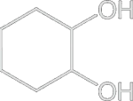

Alcohols
The functional group of an alcohol is an −OH (hydroxyl) group bonded to an sp3-hybridized carbon. The oxygen atom of an alcohol is also sp3 hybridized. Two sp3 hybrid orbitals of oxygen form s bonds to atoms of carbon and hydrogen, and the remaining two sp3 hybrid orbitals each contain an unshared pair of electrons. Figure 10.1 shows a Lewis structure and a ball-and-stick model of methanol, CH3OH, the simplest alcohol. The measured C−O−H bond angle in methanol is 108.9°, very close to the perfectly tetrahedral angle of 109.5°.
Nomenclature
In the IUPAC system, the longest chain of carbon atoms containing the −OH group is selected as the parent alkane and numbered from the end closer to −OH. To show that the compound is an alcohol, change the suffix -e of the parent alkane to -ol, and use a number to show the location of the −OH group. The location of the −OH group takes precedence over alkyl groups and halogen atoms in numbering the parent chain. For cyclic alcohols, numbering begins with the carbon bearing the −OH group. Because the −OH group is understood to be on carbon 1 of the ring, there is no need to give its location a number. In complex alcohols, the number for the hydroxyl group is often placed between the infix and the suffix. Thus, for example, 2-methyl-1-propanol and 2-methylpropan-1-ol are both acceptable names.
Common names for alcohols are derived by naming the alkyl group bonded to −OH and then adding the word alcohol. Here are IUPAC names and, in parentheses, common names for several low-molecular-weight alcohols.
(Propyl alcohol)

(Isopropyl alcohol)

(Butyl alcohol)
-2-Butanol.png)
((S)-sec-Butyl alcohol
(Isobutyl alcohol)

(tert-Butyl alcohol)
We classify alcohols as primary (1°), secondary (2°), or tertiary (3°), depending on whether the −OH group is on a primary, secondary, or tertiary carbon.
In the IUPAC system, a compound containing two hydroxyl groups is named as a diol, one containing three hydroxyl groups as a triol, and so on. In IUPAC names for diols, triols, and so on, the final -e (the suffix) of the parent alkane name is retained, as for example in the name 1,2-ethanediol. As with many organic compounds, common names for certain diols and triols have persisted. Compounds containing hydroxyl groups on adjacent carbons are often referred to as glycols (Section 6.5). Ethylene glycol and propylene glycol are synthesized from ethylene and propylene, respectively, hence their common names. A glycol or vicinal diol or 1,2-diol is a diol in whose molecule the two alcohol groups are on adjacent carbon atoms.
| 1,2-Ethanediol (Ethylene glycol) | 1,2-Cyclohexanediol | 1,2-Propanediol (Propylene glycol) |
| 1,3-Propanediol | 1,2,3-Propanetriol (Glycerol, glycerine) |
A gem diol or 1,1-diol is a diol in whose molecule the two alcohol groups are on the same carbon atom.
Compounds containing −OH and C=C groups are often referred to as unsaturated alcohols because of the presence of the carbon-carbon double bond. In the IUPAC system, the double bond is shown by changing the infix of the parent alkane from -an- to -en- (Section 2.3), and the hydroxyl group is shown by changing the suffix of the parent alkane from -e to -ol. Numbers must be used to show the location of both the carbon-carbon double bond and the hydroxyl group. The parent alkane is numbered to give the −OH group the lowest possible number; that is, the group shown by a suffix (in this case, -ol) takes precedence over the group shown by an infix (in this case, -en-).
Physical properties
Alcohols have much higher boiling points than ethers with similar molecular weights because, in addition to van der Waals forces and the dipole–dipole interactions of the polar C−O bond, alcohols can form hydrogen bonds. A hydrogen bond is a special kind of dipole–dipole interaction that occurs between a hydrogen that is attached to an oxygen, nitrogen, or fluorine and a lone pair of an oxygen, nitrogen, or fluorine in another molecule.
The length of the covalent bond between oxygen and hydrogen is 0.96 Å, whereas a hydrogen bond between an oxygen of one molecule and a hydrogen of another molecule is almost twice as long (1.69–1.79 Å). Thus, a hydrogen bond is not as strong as an O−H covalent bond, but it is stronger than other dipole–dipole interactions. The strongest hydrogen bonds are linear—the two electronegative atoms and the hydrogen between them lie on a straight line.
Although each individual hydrogen bond is weak, requiring only about 5 kcal/mol (or 21 kJ/mol) to break, there are many such bonds holding alcohol molecules together. The extra energy required to break these hydrogen bonds is why alcohols have much higher boiling points than ethers with similar molecular weights. The boiling point of water illustrates the dramatic effect that hydrogen bonding has on boiling points. Water has a molecular weight of 18 and a boiling point of 100 °C. The alkane nearest in size is methane, with a molecular weight of 16 and a boiling point of −167.7 °C.
| Structural Formula | Name | Molecular Weight (g/mol) | Boiling Point (°C) | Solubility in Water |
|---|---|---|---|---|
| CH3OH | Methanol | 32 | 65 | Infinite |
| CH3CH3 | Ethane | 30 | −89 | Insoluble |
| CH3CH2OH | Ethanol | 46 | 78 | Infinite |
| CH3CH2CH3 | Propane | 44 | −42 | Insoluble |
| CH3CH2CH2OH | 1-Propanol | 60 | 97 | Infinite |
| CH3CH2CH2CH3 | Butane | 58 | 0 | Insoluble |
| CH3CH2CH2CH2OH | 1-Butanol | 74 | 117 | 8 g/100 g |
| CH3CH2CH2CH2CH3 | Pentane | 72 | 36 | Insoluble |
| HOCH2CH2CH2CH2OH | 1,4-Butanediol | 90 | 230 | Infinite |
| CH3CH2CH2CH2CH2OH | 1-Pentanol | 88 | 138 | 2.3 g/100 g |
| CH3 CH2CH2CH2CH2CH3 | Hexane | 86 | 69 | Insoluble |